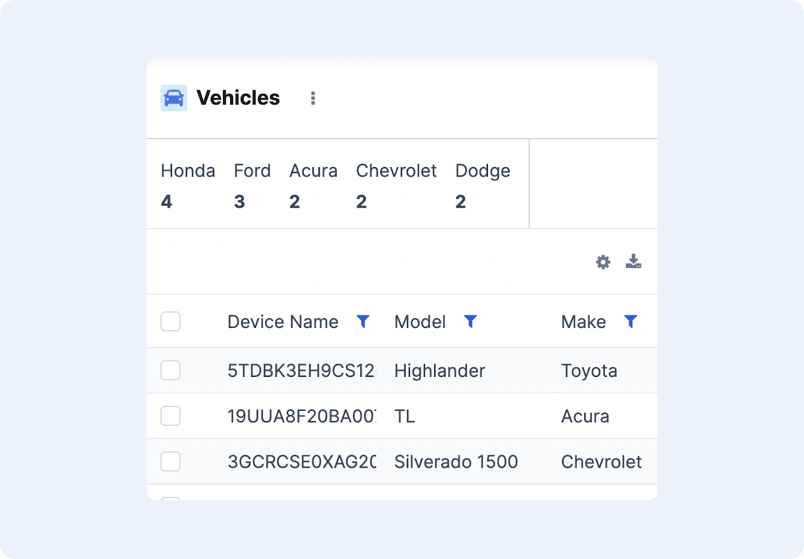

Aggregations Viewer¶
The aggregations viewer is a UI component that allows users to display data based on configurable groupings/aggregations of values.
The component can be used in a number different ways. For example, the aggregations viewer can be used to:
- Show the counts of assets by type
- Show the counts of devices by zone
- Show the average count of assets in each zone

Accessing the Aggregations Viewer Configuration¶
To access the aggregations viewer configuration, verify that the aggregations viewer component is added to the page using the layout controller. Then click the gear icon on the right side of the aggregations viewer panel and select Edit Settings.
Configuring Aggregations¶
The aggregations panel is organized by aggregation type. Each of the aggregation types and the configuration options for each are described in the following sections.
Filters¶
The filters aggregation allows users to create a count of devices/assets/objects based on a filter that they configure. For example, a user can create an aggregation that shows the number of vehicles that have a Make = Toyota and Year >= 2017.
To create a filter aggregation, users must configure the Aggregation and the View:
- Click the Aggregations > + Add button and select Filter
- Click the + Add button in the first column under Filters. This should create an entry called
Filter 1. - Enter the name of the filter in the field where
Filter 1is shown. - Click the + Add button in the 2nd column to add a condition. A condition can be a Comparison, Enum Equals, Equals, Exists, Parent Equals, or Resource Enum Equals:
- Comparison - Compares a field against a known value using a comparison operator (greater than, less than, or between)
- Select the name of the field in the Field dropdown
- Select the type of comparison in the dropdown below the field option (Less Than, Greater Than, etc.) and the desired comparison value in the text box below it
- To include empty values in the comparison, check the Include Empty box
- Enum Equals - Checks if a field is equal to one or more enum values. The value should already exist in the data table (be filterable already).
- Select the name of the field in the Field dropdown
- Select the one or more values in the list of values by checking the box
- Any of the selected values will be counted in the Enum Equals filter
- Equals - Checks if a field is equal to one or more values. The value should already exist in the data table (be filterable already).
- Select the name of the field in the Field dropdown
- Select the one or more values in the list of values by checking the box
- Any of the selected values will be counted in the Equals filter
- Exists - Checks if a field is not empty or empty to include in the count
- Select the name of the field in the Field dropdown
- Select whether the field should be included if the value Exists or if the value Does Not Exist
- Parent Equals - Checks if a the parent of a device has attribute is equal to one or more values. The value should already exist in the data table (be filterable already).
- Select the name of the field in the Field dropdown
- Select the one or more values in the list of values by checking the box
- Any of the selected values will be counted in the Parent Equals filter
- Resource Enum Equals - Checks if a field is equal to one or more resource enum values. The value should already exist in the data table (be filterable already).
- Select the name of the field in the Field dropdown
- Select the one or more values in the list of values by checking the box
- Any of the selected values will be counted in the Resource Enum Equals filter
- Comparison - Compares a field against a known value using a comparison operator (greater than, less than, or between)
- Click the Views menu and click the + Add button and select the View Type
- The Text view type represents the data as text (or in numerics, a count)
- Configure the appearance of the Header and Value of the aggregation using the configuration opened on the right
- The JSON view type represents the data as JSON
- The Text view type represents the data as text (or in numerics, a count)
- Click Apply to apply the changes. Save the configuration to the current dashboard by clicking the checkmark next to the dashboard selector.
Geo Distance¶
The Geo Distance aggregation groups devices/objects into distances from an origin point.
To create a geo distance aggregation, users must configure the Aggregation and the View:
- Click the Aggregations > + Add button and select Geo Distance
- Enter the name of the aggregation in the Name field
- Select the name of the field in the Field dropdown
- In the Origin section, enter in the Latitude and Longitude of the point to measure from, the Unit of measurement, and the Distance Type (plane or arc)
- Set the ranges of the bins in the Ranges section by entering in the min and max values of each range. Add additional bins with the Add Range button.
- Click the Views menu and click the + Add button and select the View Type
- The Text view type represents the data as text (or in numerics, a count)
- Configure the appearance of the Header, Sub Header, and Value of the aggregation using the configuration opened on the right
- The JSON view type represents the data as JSON
- The Text view type represents the data as text (or in numerics, a count)
- Click Apply to apply the changes. Save the configuration to the current dashboard by clicking the checkmark next to the dashboard selector.
Histogram¶
The Histogram aggregation groups devices into equal sized bins based on the entire range of data.
To create a histogram aggregation, users must configure the Aggregation and the View:
- Click the Aggregations > + Add button and select Histogram
- Enter the name of the aggregation in the Name field
- Select the name of the field in the Field dropdown
- Set the bin width using the Interval field
- Set the lower and upper bounds of the histogram using the Min Bounds and Max Bounds fields
- To set the start of a bin at a given offset, set the Offset value
- To define the bins that missing/empty values take, set the Missing field
- Click the Views menu and click the + Add button and select the View Type
- The Text view type represents the data as text (or in numerics, a count)
- Configure the appearance of the Header and Value of the aggregation using the configuration opened on the right
- The JSON view type represents the data as JSON
- The Text view type represents the data as text (or in numerics, a count)
- Click Apply to apply the changes. Save the configuration to the current dashboard by clicking the checkmark next to the dashboard selector.
Range¶
The Range aggregation groups devices into configurable bins of any size. As opposed to a histogram which uses bins of equal size to continuously span the entire dataset, the range aggregation allows users to specify ranges of any size and do not have to be continuous.
For example, if there exists a dataset that spans from 1 to 20, a histogram may have four bins, each of size 5 to span from 1 to 20 (e.g. 1-5, 6-10, 11-15 ,16-20). A range aggregation can arbitrarily specify any sub-spans of the data which do not have to be continuous or the same size bin (e.g. 5-9, 10-17).
To create a range aggregation, users must configure the Aggregation and the View:
- Click the Aggregations > + Add button and select Range
- Enter the name of the aggregation in the Name field
- Select the name of the field in the Field dropdown
- Set the ranges of the bins in the Ranges section by entering in the min and max values of each range. Add additional bins with the Add Range button.
- Click the Views menu and click the + Add button and select the View Type
- The Text view type represents the data as text (or in numerics, a count)
- Configure the appearance of the Header,and Value of the aggregation using the configuration opened on the right
- The JSON view type represents the data as JSON
- The Text view type represents the data as text (or in numerics, a count)
- Click Apply to apply the changes. Save the configuration to the current dashboard by clicking the checkmark next to the dashboard selector.
Stats¶
The Stats aggregation type shows a set of basic statistics of a numeric field. By default, the stats shown are: count of records, minimum value, maximum value, average value, and sum of values.
To create a stats aggregation, users must configure the Aggregation and the View:
- Click the Aggregations > + Add button and select Stats
- Enter the name of the aggregation in the Name field
- Select the name of the field in the Field dropdown
- Click the Views menu and click the + Add button and select the View Type
- The Stats view type represents the configuration for each of the stats
- Configure the appearance of the Header and Value of the aggregation using the configuration opened on the right
- Configure whether each stat is shown or hidden in the aggregation by checking or unchecking the Show [Stat] box next to each stat
- Configure the label of the stat by setting the [Stat] Label field
- The Stats view type represents the configuration for each of the stats
- Click Apply to apply the changes. Save the configuration to the current dashboard by clicking the checkmark next to the dashboard selector.
Terms¶
The Terms aggregation type shows the count of records by values in a field. For example, the terms aggregation can show the count of vehicles by make, or the count of vehicles by zone name.
To create a terms aggregation, users must configure the Aggregation and the View:
- Click the Aggregations > + Add button and select Terms
- Enter the name of the aggregation in the Name field
- Select the name of the field in the Field dropdown
- To limit the aggregation to showing first X number of possible values (e.g. if there are 10 total possible vehicle makes, only show the first 4 makes), set the value in the Size field
- Enter any values to explicitly exclude in the aggregation type in the Exclude field
- Enter any values to explicitly include in the aggregation type in the Include field. Note: typically a user would configure only one of the Exclude or Include fields
- To only show terms that have a count greater than a certain minimum count threshold, set the Min Count field
- To define the value that terms with empty/no counts take, set the Missing Value field
- Click the Views menu and click the + Add button and select the View Type
- The Text view type represents the data as text (or in numerics, a count)
- Configure the appearance of the Header and Value of the aggregation using the configuration opened on the right
- The JSON view type represents the data as JSON
- The Text view type represents the data as text (or in numerics, a count)
- Click Apply to apply the changes. Save the configuration to the current dashboard by clicking the checkmark next to the dashboard selector.
Changing the Aggregation Panel Variant¶
To change the variant that the aggregation panel uses, go to the aggregation panel configuration > Options menu and enter the variant name in the Variant field.